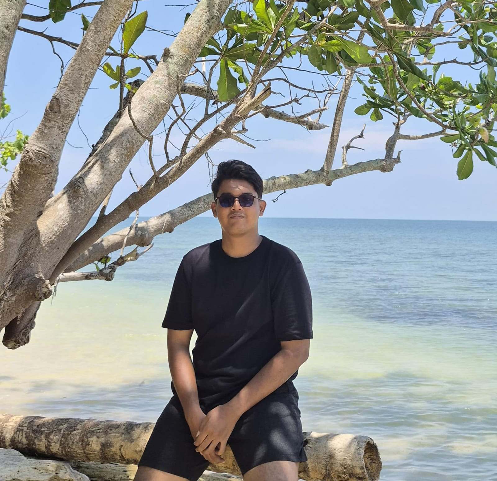

mahasiswa · pendidik matematika masa depan
M. Alfarezi
Lbn Gaol
Mahasiswa Pendidikan Matematika
Universitas Negeri Medan
Hello, I’m Alfarezi! I’m a Mathematics Education student at Universitas Negeri Medan (UNIMED) with an interest in education, organizational activities, and event management. During my college journey, I have been actively involved in student organizations and various committees, which have helped me develop my communication, teamwork, coordination, and leadership skills. I enjoy working with others, organizing activities, and taking on new challenges that allow me to learn and grow. Through my academic and organizational experiences, I continue to develop both my professional and personal skills while building meaningful experiences that can support my future career.
Hubungi saya
About Me
Sedikit cerita tentang siapa saya dan perjalanan pendidikan saya.
Biodata Singkat
- Nama
- M. Alfarezi Lbn Gaol
- Program Studi
- S-1Pendidikan Matematika
- Universitas
- Universitas Negeri Medan
- Domisili
- Stabat, Kab. Langkat, Sumatera Utara
- Minat
- Badmintoon, Basket, Membaca Buku, Bermain Game Online
Pendidikan
-
Universitas Negeri Medan
Menempuh studi di bidang pendidikan matematika, mendalami metode pengajaran dan penguasaan konsep matematika sekolah.
-
SMAN 1 Stabat
Menyelesaikan pendidikan menengah atas dengan mempelajari berbagai bidang akademik serta mengembangkan kemampuan berpikir kritis, disiplin, tanggung jawab, dan kerja sama. Pendidikan di tingkat SMA menjadi salah satu tahap dalam membangun ketertarikan terhadap bidang matematika dan pendidikan.
-
MTsN 3 Langkat
Menyelesaikan pendidikan tingkat menengah pertama dengan memperoleh dasar pengetahuan akademik dan keagamaan. Selama masa pendidikan, mengembangkan kedisiplinan, tanggung jawab, kemampuan belajar, serta kemampuan berinteraksi dengan lingkungan sekitar.
-
SD IT Al-Maksum Stabat
Menyelesaikan pendidikan dasar dengan membangun kemampuan akademik dan karakter sejak dini. Pada tahap ini, mulai mengembangkan kebiasaan belajar, kedisiplinan, rasa ingin tahu, serta kemampuan bekerja sama dengan orang lain.
Contact
Silakan hubungi saya melalui salah satu kanal berikut.
- email mhdalfarezi22@gmail.com
- instagram @m.alfarezi_22
- github https://github.com/mhdalfarezi22-web